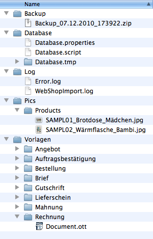

Alle Daten, die Fakturama benutzt, werden in einem Arbeitsverzeichnis abgelegt.
Bei jedem Start von Fakturama wird die Datenbank komprimiert und mit Zeitstempel versehen in diesem Ordner abgelegt. Es ist damit möglich, die Datenbank zu einem Stand wieder zurückzusetzen. Produktbilder werden nicht gesichert.
Fakturama speichert alle Daten (bis auf die Produktbilder) in einer HSQLDB 2.0 Datenbank. Diese Datenbank besteht aus den beiden Dateien Database.properties, welche Einstellungen der Datenbank speichert und Database.script mit den eigentlichen Daten.
Ist Fakturama geöffnet, werden bis zum Schließen zusätzlich noch die Dateien Database.lck und Database.log erzeugt. Den Ordner Database.tmp benutzt die Datenbank, um kurzzeitig Daten zwischenzuspeichern.
Fehler während dem Programmablauf werden in der Datei Error.log festgehalten. WebShopImport.log ist die Antwort des Webshops bei Abfragen von Daten.
Fakturama speichert keine Bilder in der Datenbank. Diese werden im Ordner Pics abgelegt. Für eine vollständige Sicherung müssen diese mit der Datenbank gesichert werden.
Siehe auch Produktbild
In diesem Ordner befinden sich die Vorlagen für alle Dokumente im OpenOffice/LibreOffice-Format und für die Paketdienste. Damit eine Vorlage benutzt werden kann, muss diese nur in dem entsprechenden Ordner im *.ott Format abgelegt werden. Bei zwei oder mehreren Vorlagen kann der Benutzer kurz vor dem Drucken die entsprechende Vorlage auswählen.
Siehe auch OpenOffice.org Vorlagen